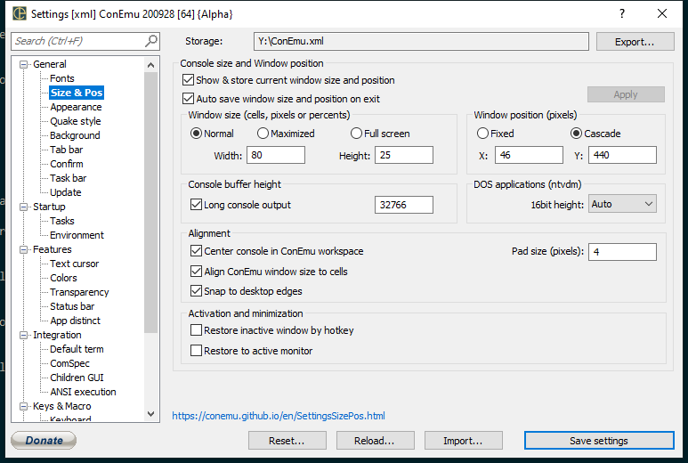

Settings: Size & Pos

Console size and Window position
Show & store current window size and position
Auto save window size and position on exit
Apply
Window size (cells, pixels or percents)
- Normal
- Maximized
- Full screen
Width Width of console window Use numbers for size in cells Use percent sign (e.g. ‘40%’) for monitor-relative size Use ‘px’ suffix (e.g. ‘800px’) for strict pixel size
Height Height of console window Use numbers for size in cells Use percent sign (e.g. ‘40%’) for monitor-relative size Use ‘px’ suffix (e.g. ‘800px’) for strict pixel size
Window position (pixels)
- Fixed
- Cascade
X Upper left corner of ConEmu in Normal mode This is in pixels
Y Upper left corner of ConEmu in Normal mode This is in pixels
Console buffer height
Long console output Autoexpand bufferheight to specified number of lines, while Far executes console commands. Full console output (up to specified count of lines) will be available via Far macro (CtrlO.reg)
Size of bufferheight, while Far executes console commands
DOS applications (ntvdm)
RTEXT
Old DOS programs may be runned under console sizes: 80x25, 80x28, 80x43 or 80x50. You may force window size selection, or left the automatic selection. This feature is not available in x64 OS.
Alignment
Center console in ConEmu workspace Draw console content in center of ConEmu window. Use together with ‘Pad size’
Pad size Create pad between ConEmu frame and console field
Align ConEmu window size to cells (pixels)
Snap to desktop edges Lock ConEmu window inside desktop work area
Window size (cells, pixels or percents)
Window position (pixels)
Console buffer height
DOS applications (ntvdm)
Alignment
FullScreen mode
Hide tab & status bars
Fixed console size